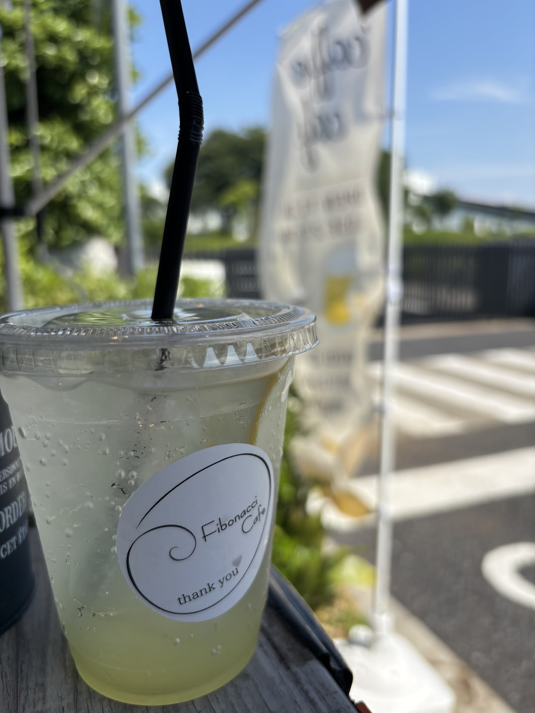

渦巻きロゴのステッカーが目印です。／写真提供: m m(Googleマップ)
About
「Fibonacci」という名前について
らせんを描くフィボナッチ数列にちなんで名づけられた、小さな屋台スタンドです。 かんたんそうに見えて奥がある、そんな数列の面白さのように、 この場所にもゆっくり通ってみてはじめて分かる魅力があります。
Features
Fibonacci Cafeの特徴
昼はコーヒーと軽食、夜はビールとおつまみ。 時間帯によって、ちがう楽しみ方ができます。
屋台ならではの気軽さで、揚げたての軽食をお楽しみいただけます。
テイクアウトはもちろん、ちょっと腰かけて一息つけるベンチ席もあります。
取手市寺田、住宅街のすぐそば。ふらりと立ち寄れる、ちょっと意外な立地です。
Access
アクセス
〒302-0021 茨城県取手市寺田5270-26 営業時間は季節・天候等により変動することがあります。 最新情報はInstagramまたはお電話でご確認ください。